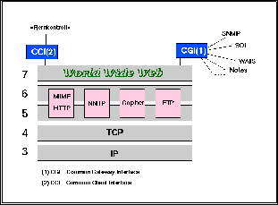

Da folkene ved CERN lagde WWW rammeverket rundt 1989-90, var dette blandt annet som følge av behovet for et Internet informasjonssystem som favnet all eksisterende informasjon som allerede fantes ute på nettet. Man hadde de siste årene sett tendenser til at Internettet delte seg i «informasjonsøyer» etter hvert som nye informasjonstjenester dukket opp.
WWW ble dermed laget slik at det skulle være lett å favne eksisterende informasjonssystemer som f.eks. Gopher, News (NNTP) og FTP.

Figur 1 illustrerer dette og viser samtidig WWW i relasjon til OSI modellen. Denne figuren finnes også i full størrelse her.
Figuren viser de forskjellige applikasjonsprotokollene som alltid skal støttes av World Wide Web. Dette er å forstå slik at det er WWW klienten som skal være i stand til å snakke disse protokollene direkte mot protokolltjeneren i andre enden.
Noen klienter har dessuten direkte støtte for enda flere protokoller. Et vanlig eksempel på en slik protokoll, er protokollen som benyttes av WAIS rammeverket. For slike klienter skal WAIS protokollen plasseres likestilt med HTTP, NNTP, FTP og Gopher i figur 1.
Med «direkte støtte for andre protokoller», menes at WWW klienten kan snakke disse protokollene - dvs. gjøre forespørsler via protokollen samt presentere data på en enhetlig måte tilbake til brukeren. I dette ligger det nødvendigvis en eller annen form for oversetting av data fra det formatet protokollmaskinen (tjeneren) i andre enden benytter.
Til forskjell fra slik «direkte støtte», er det også mulig for WWW klienten å kommunisere med vilkårlige eksterne applikasjoner via såkalte «gatewayer» eller «server skript». Det er definert en mekanisme som spesifiserer hvordan dette skal foregå - Common Gateway Interface (se kapittelet om CGI (3)).
Ganske nylig er det dessuten dukket opp noe som kalles Common Client Interface (CCI). Som navnet antyder, er dette en protokoll for hvordan man kan snakke med en WWW klient via andre applikasjoner. CCI kan f.eks. brukes til å fjernstyre en WWW klient, f.eks. med det formål å bruke en WWW klient som en automatisk fremviser av ulike datatyper innenfor en større applikasjon.
{kind=link}